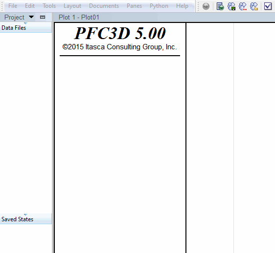
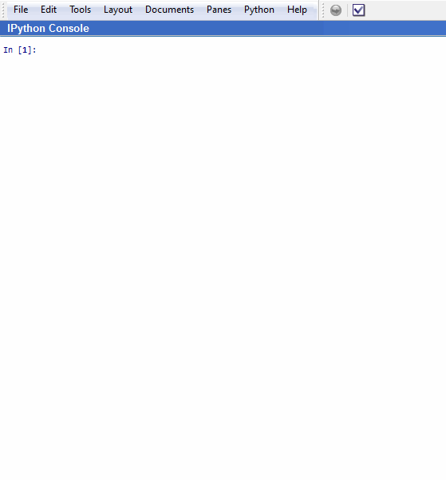

Python 编程入门
本节简要介绍一般性的 Python 编程，不涉及在 Itasca 软件中的使用。可查阅许多在线和已出版物获取更多信息：
- 官方 Python 网页：Python 官网（http://python.org）。
- 官方 Python 教程是很好的入门材料：Python 教程简介页面（http://docs.python.org/2/tutorial/introduction.html）
- http://learnpythonthehardway.org/book/
- Mark Lutx 著《Learning Python》，O’Reilly 出版。
- 科学计算方面的专门信息见：SciPy 讲座网站（https://scipy-lectures.github.io/）
IPython 控制台
开始 Python 编程的最佳方式是在程序的 IPython 窗格中动手试验。通过 菜单中的 项可打开如下图所示的标签页。以下示例可在该终端中运行。

- 用上下方向键访问先前的输入。
- 用 Tab 键补全 Python 名称。
- 关于该终端的更多信息见 IPython 官网（http://ipython.org）。
基本类型
Python 中每个值都有特定类型。最常见的类型是 int、float 和 str，分别表示整数、实数和字符串。下面我们把一些值赋给一些变量。
size = 0.5
box_count = 10
first_name = "Fred"
last_name = 'Baker'
long_string = """
This is a multi-line string.
Triple quotes are used to define strings like this.
"""
列表、元组与字典
Python 中常用三种基本容器类型，即 list、tuple 和 dict 类型。
列表用 [ ] 字符创建。
id_list = [1, 2, 3, 4]
在 IPython 控制台键入 id_list 可显示该列表的值。
id_list
output:
[1, 2, 3, 4]
用 append 方法在列表末尾添加一项。
id_list.append(903)
id_list
output:
[1, 2, 3, 4, 903]
用 for 与 in 遍历列表（或任何序列）。
for id_number in id_list:
print ("id #: ", id_number)
output:
id #: 1 id #: 2 id #: 3 id #: 4 id #: 903
注意，用空白缩进来表示哪些代码属于该循环。
用 len 获取列表长度。
len(id_list)
output:
5
通过索引（使用 [ ]）访问列表的单个元素。
id_list[0]
output:
1
使用 [#:#] 访问列表的一段连续元素（即 slice）。
id_list[1:3]
output:
[2, 3]
列表索引可以为负，此时从列表末尾返回元素。
id_list[-1]
output:
903
列表中元素的值可以修改。
id_list[0] = 10.0
print (id_list)
output:
[10.0, 2, 3, 4, 903]
列表可以存储不同类型的对象。
id_list.append("this is a string")
id_list
output:
[10.0, 2, 3, 4, 903, 'this is a string']
Tuples
元组与之相似，但创建后不能被修改——也就是说元组是不可变的。
parts = (1,2,3,4,5)
parts
output:
(1, 2, 3, 4, 5)
Dictionaries
Python 字典用于对象之间的一一映射（键/值对）。下面一行给出赋给变量 telephone_directory 的字典字面量。
telephone_directory = {"Jim" : 125, "Steve": 128, "Bob" : 144}
telephone_directory
output:
{'Jim': 125, 'Steve': 128, 'Bob': 144}
通过提供键在字典中查找值。
telephone_directory["Jim"]
output:
125
用 [ ] 为已有字典赋予新的键/值对。
telephone_directory["Fred"] = 147
telephone_directory[(1,3)] = 0.22344
telephone_directory
output:
{'Jim': 125, 'Steve': 128, 'Bob': 144, 'Fred': 147, (1, 3): 0.22344}
用 del 从字典中删除键、值对。
del(telephone_directory["Bob"])
像列表一样遍历字典的键值对。
for key, value in telephone_directory.items():
print ("found key: {} with value: {}".format(key, value))
output:
found key: Jim with value: 125 found key: Steve with value: 128 found key: Fred with value: 147 found key: (1, 3) with value: 0.22344
用 keys 方法获取字典键的列表。
telephone_directory.keys()
output:
dict_keys(['Jim', 'Steve', 'Fred', (1, 3)])
关于字典的更多内容见：Python 教程的字典一节（The dictionary section of the Python tutorial）
定义函数
Python 中用 def 关键字定义函数。
def my_function(a, b):
return a + b
my_function(1.0, 5)
output:
6.0
Python 中的错误处理。
下面的函数调用故意包含一个错误，以演示 Python 如何处理错误。
my_function(1.0, "This is a Python string")
output:
Traceback (most recent call last): File "<string>", line 8, in <module> File "", line 1, in <module> File "c:/src/ppfc/common/python/src/basic_python.py", line 60, in <module> my_function(1.0, "This is a Python string") File "c:/src/ppfc/common/python/src/basic_python.py", line 49, in my_function return a + b TypeError: unsupported operand type(s) for +: 'float' and 'str'
该错误之所以出现，是因为 float 和 str 对象在 Python 中不能相加，因此调用该函数时会产生错误信息。在 Python 中引发错误会打印 回溯。回溯会告诉你所遇错误的类型以及出错的行和文件。
注意
进行高级故障诊断时使用 Python 调试器（Python debugger）。在 IPython 控制台键入 debug 即可激活调试器。
面向对象编程
在 Python 中所有值（值即变量可以引用的东西）都是对象。对象是类的实例。对象有方法。例如上面定义（并在下面重复）的 long_string 变量是类型 str 的对象。把方法（此处为 split()）附着在变量名后即可对该变量调用 str 方法。
long_string = """
This is a multi-line string.
Triple quotes are used to define strings like this.
"""
long_string.split()
output:
['This', 'is', 'a', 'multi-line', 'string.', 'Triple', 'quotes', 'are', 'used', 'to', 'define', 'strings', 'like', 'this.']
str 对象的 split 方法接收原始字符串，在每个空格字符处拆分，并把结果作为列表返回。
PFC、FLAC3D 和 3DEC 的数值模型对象在 Python 中表示为对象。例如，有 Ball 对象表示 PFC 的球，有 Zone 对象表示 FLAC3D 的网格单元。正如这里用内置 Python 对象类型 String 所示，Itasca 软件的模型对象具有属性和方法。更多信息请参见各程序使用 Python 的相关章节。
交互式文档
IPython 控制台提供交互式补全和行内文档，使编程更轻松。下图利用这些功能展示了字符串对象的部分可用方法。
- 在写了一半的名称后按
tab键会给出交互式补全。再次按tab会在可用名称之间循环。按enter选定某个补全。 - 在函数名后键入
(字符即显示交互式文档。 - 另一种方法是，在任意 Python 函数、模块或对象的末尾加上
?字符，即可显示行内文档。

示例文件
此示例的源代码为 basic_python.py。
| 这些内容对您有帮助吗？… | FLAC3D © 2019, Itasca | 原文更新于 2020 年 10 月 8 日 |